Explore Rio de Janeiro
A Brief History
Rio de Janeiro served as Brazil's capital from 1763 until 1960, when government offices moved to Brasília. Founded around Guanabara Bay, it expanded through sugar, gold, and later coffee wealth, leaving colonial churches, imperial palaces, and planned beachfront districts. Christ the Redeemer, Sugarloaf Mountain, and neighbourhoods from Centro to Copacabana record Rio's role as a port city, imperial seat, and global cultural symbol.
Attractions Map
Top Sights & Activities
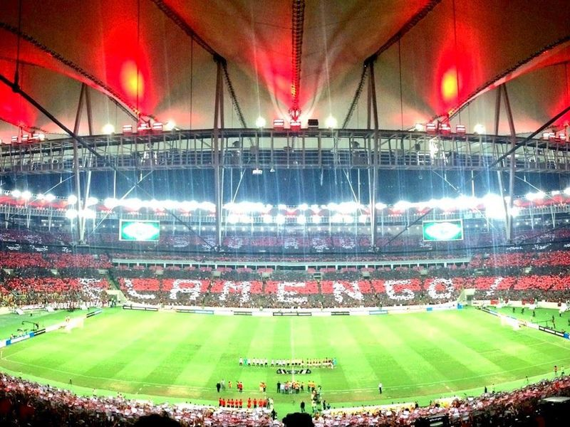
Maracanã
Maracanã, also known as Estadio Jornalista Mario Filho, is a legendary stadium in Rio De Janeiro and the largest in Brazil. With a seating capacity of around 78,500 fans, it has hosted Olympic games and significant international sporting events. The construction involved renowned architects such as Waldir Ramos and Miguel Feldman. A visit to Maracanã is a must for soccer enthusiasts visiting Rio De Janeiro.
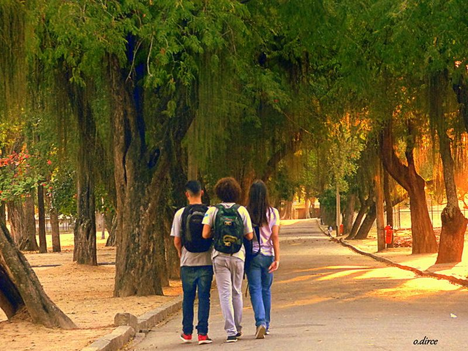
Quinta da Boa Vista
Quinta da Boa Vista is a large urban park located in the Sao Cristovao neighborhood of Rio de Janeiro, Brazil. It was originally the residence of the Portuguese Royal Family in the 19th century and has since been converted into a tranquil green space perfect for relaxing with friends or family. The park features a zoo and an archaeological museum housing artifacts dating back to ancient Brazilian civilizations.
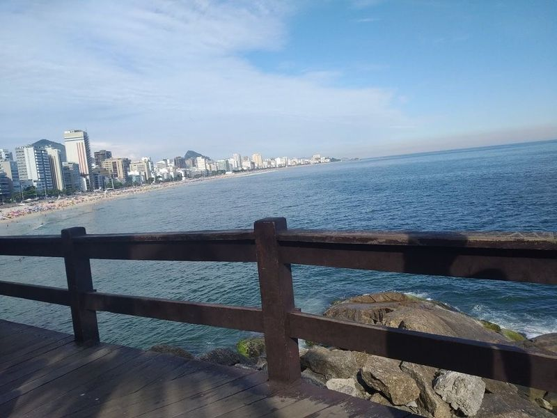
Mirante do Leblon
Nestled at the end of Leblon beach, Mirante do Leblon is a captivating observation deck that offers views of both Leblon and Ipanema beaches. This popular spot, adorned with palm trees and vibrant oleanders, provides an idyllic setting for sunset watching over the Atlantic Ocean. While it may be well-known among tourists, it remains a cherished favorite for locals who enjoy its lively atmosphere.
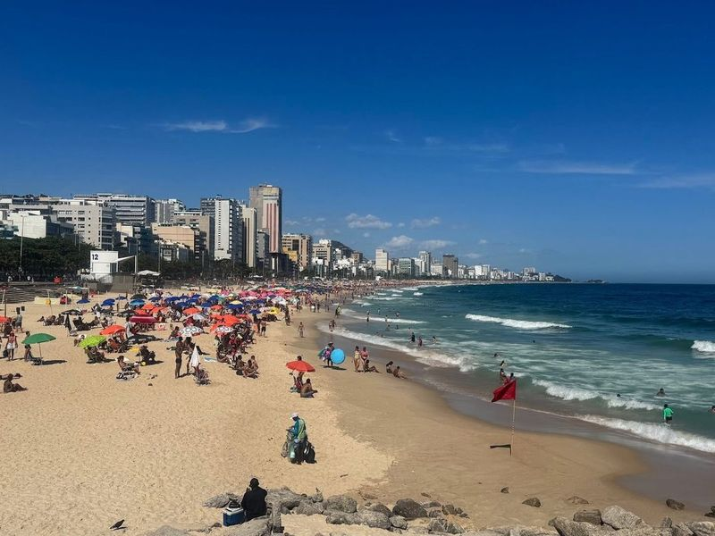
Leblon Beach
Leblon Beach is a well-known and stylish sandy stretch located at the far end of Ipanema, offering a sophisticated yet laid-back coastal charm. It attracts an affluent local crowd as well as trendsetting visitors seeking a taste of Rio's cosmopolitan beach culture. The beach features upscale kiosks and restaurants serving gourmet seafood dishes and refreshing caipirinhas along its wide, well-maintained promenade.
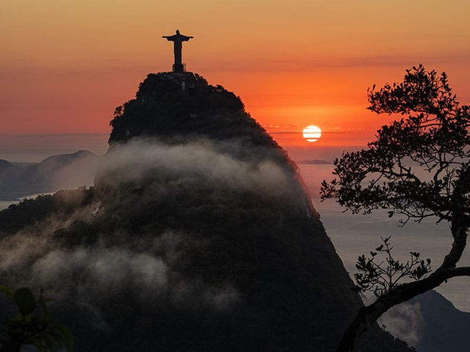
Christ the Redeemer
Perched atop the Corcovado Hill, Christ the Redeemer stands as a magnificent 30-meter tall statue of Jesus Christ, offering views of Rio de Janeiro. This landmark is not just a religious symbol but also a prime vantage point for panoramic vistas that encompass the sprawling cityscape.
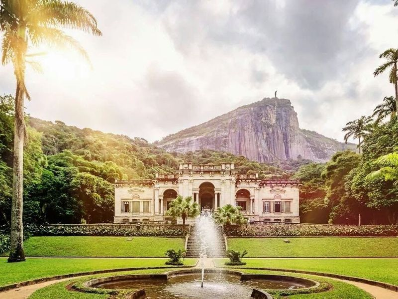
Parque Lage
Parque Lage is a hidden gem nestled at the foot of Corcovado Mountain, offering a delightful blend of nature and art. This enchanting park features winding wooded trails that lead to views of the Christ the Redeemer statue. Originally designed by English landscaper John Tyndale, its tropical gardens are adorned with charming elements like a Baroque folly and grotto, seamlessly integrated into Rio's vibrant rainforest.
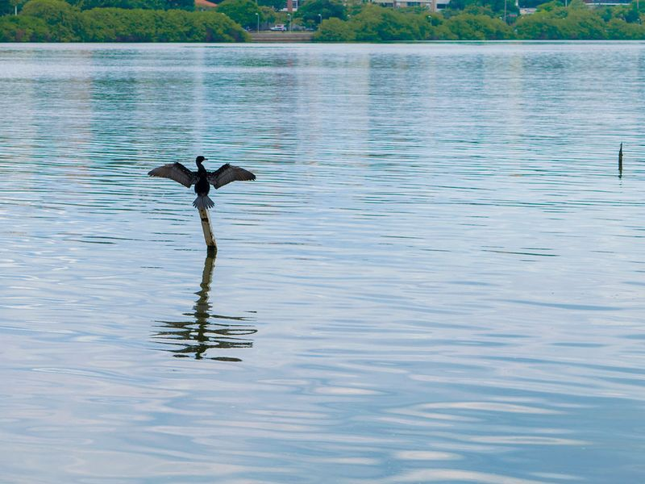
Rodrigo de Freitas Lagoon
Rodrigo de Freitas Lagoon, often simply referred to as Lagoa, is a seawater lagoon nestled in the heart of Rio de Janeiro. This picturesque spot gained international attention during the 2016 Olympics when it hosted various rowing and canoeing events. Surrounded by majestic mountains, the lagoon offers a serene escape from city life, making it a favorite among locals seeking tranquility amidst urban chaos. A scenic 7.
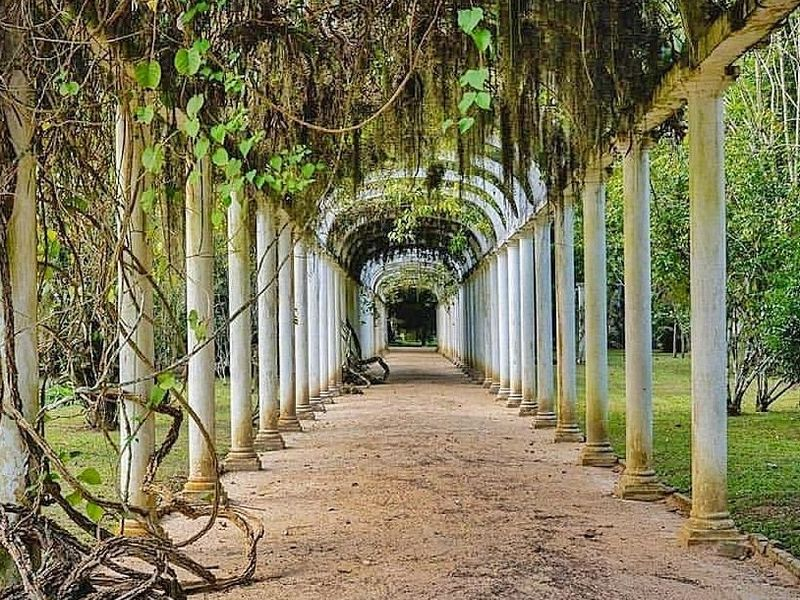
Botanical Garden of Rio de Janeiro
Nestled in the Jadrim Botanico district of Rio's Zona Sul, the Botanical Garden of Rio de Janeiro is a historic park that boasts a rich variety of flora and fauna. Established in 1808 and opened to the public in 1822, this sprawling garden spans 54 cultivated hectares and is home to an impressive collection of 6,500 different plants.
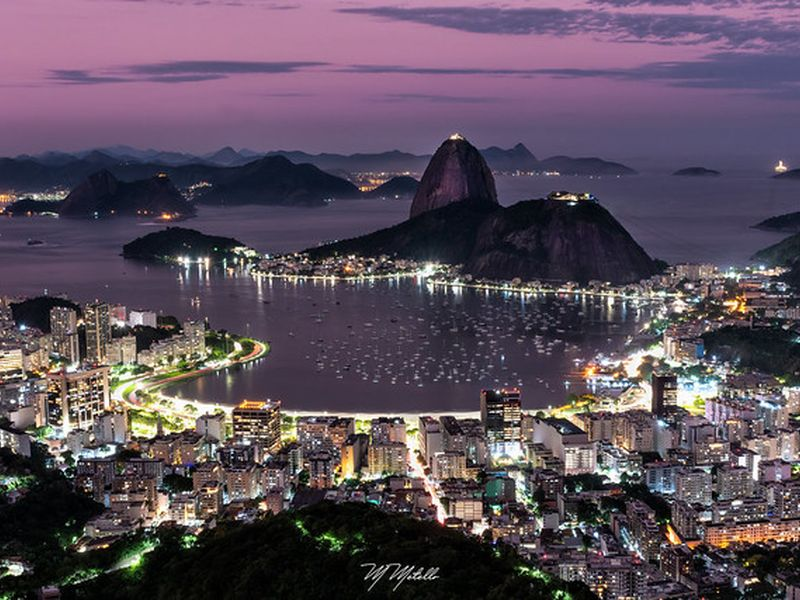
Mirante Dona Marta
Mirante Dona Marta, located in the South Zone of Rio de Janeiro, is a cliffside lookout point that offers panoramic views of the city. At an altitude of ft, it provides an expansive vista that includes landmarks such as Sugarloaf Mountain and the Christ the Redeemer statue. Visitors can capture incredible photos and create lasting memories while taking in the scenery.
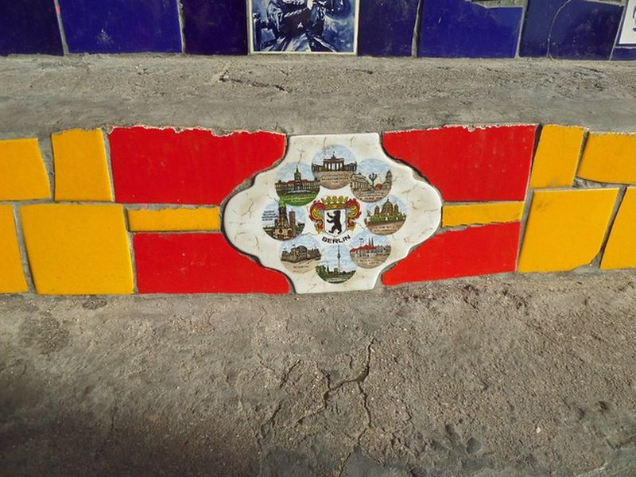
Escadaria Selarón
Escadaria Selarón, also known as the Selaron Steps, is a famous public stairway in the city adorned with colorful and hand-painted tiles. This landmark consists of 215 vibrant steps leading up from Rua Joaquim Silva. The Chilean-born artist Jorge Selarón dedicated decades to covering the steps with over 2,000 tiles collected from more than 60 countries around the world.
Arcos da Lapa
Arcos da Lapa, also known as Aqueduto da Carioca, is an 18th-century aqueduct featuring 42 massive stone arches in central Rio. Built to carry water from the Carioca River to Centro, it was later repurposed as a viaduct for the bonde tram. The structure frames Lapa's nightlife quarter and remains one of Rio's most photographed colonial landmarks.
Catedral Metropolitana de São Sebastião do Rio de Janeiro
The Catedral Metropolitana de São Sebastião do Rio de Janeiro, inaugurated in 1976, is a distinctive modern Catholic cathedral with a pyramid-like structure. Its exterior, resembling a concrete beehive, stands out among the traditional baroque architecture of Rio de Janeiro. Inside, the spacious interior can accommodate over 20,000 people and features four stained-glass windows that fill the space with colorful light.
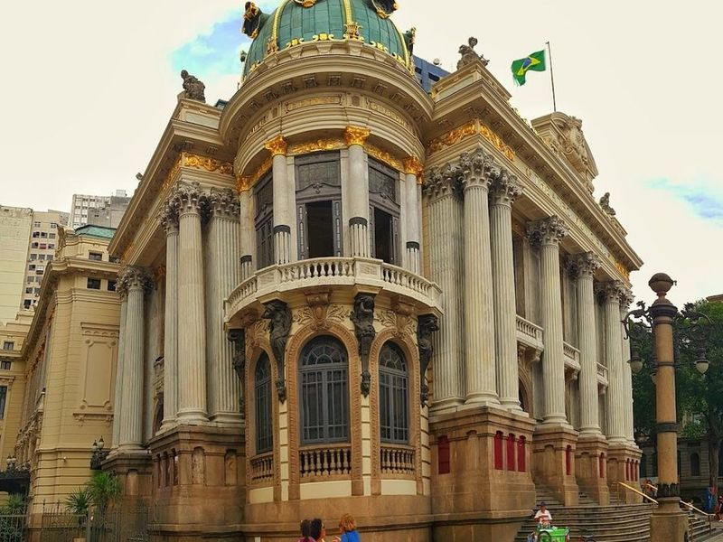
Theatro Municipal do Rio de Janeiro
The Municipal Theater of Rio de Janeiro, built in the early 1900s, is a Parisian-style venue known for its ballet and classical music performances. It is considered beautiful and significant theaters in Brazil. Visitors can explore the city center to discover architectural marvels like this theater and enjoy cultural experiences at places such as Centro Cultural Banco do Brasil.
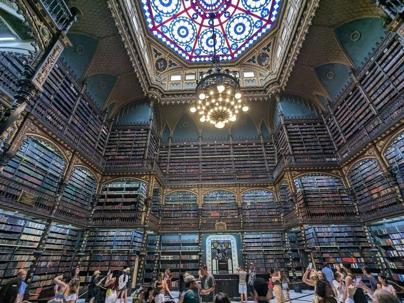
Real Gabinete Português de Leitura
The Royal Portuguese Reading Room is a library in Neo-Manueline style, featuring ornate decor and an extensive collection of volumes by Portuguese authors. It is considered beautiful libraries in the world and offers a rich cultural experience for visitors. The three-story-tall bookshelves, intricate architecture, dramatic stained-glass dome, and sparkling chandelier create an enchanting atmosphere for avid readers to relax with a book.
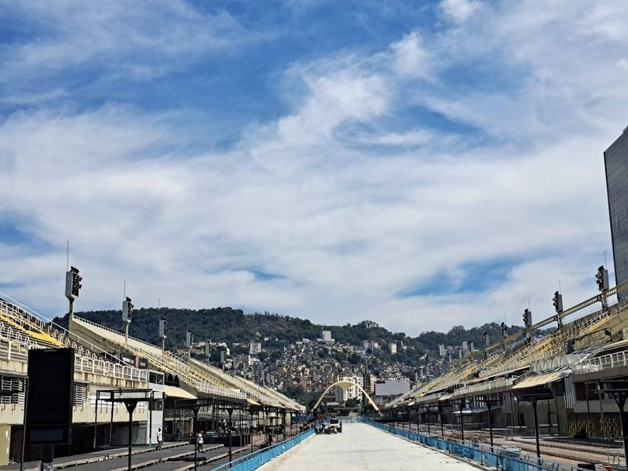
Sambódromo Marquês de Sapucaí
The Sambadrome Marquês de Sapucaí, also known as Passarela Professor Darcy Ribeiro or simply the Sambodromo, is a purpose-built parade area in Rio de Janeiro, Brazil. This 700-meter strip with huge bleachers was designed by renowned architect Oscar Niemeyer and is where samba schools parade each year during the famous Rio Carnival.
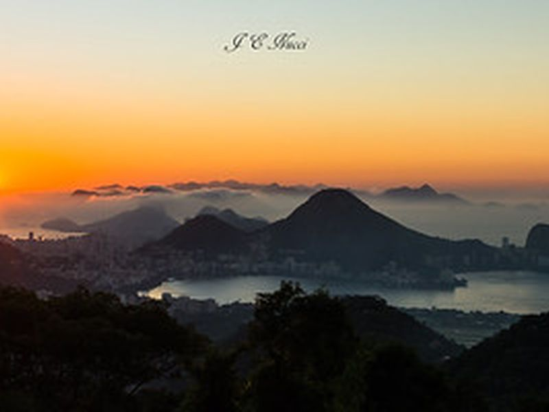
Vista Chinesa
Vista Chinesa is a picturesque lookout in Rio's Tijuca Forest where a 1903 Chinese-style pavilion stands at 380 metres elevation. Wide terraces face south toward Ipanema, Leblon, and the Atlantic, with forested peaks rising behind the city. The monument is a favourite stop on drives through the national park above the Zona Sul beaches.
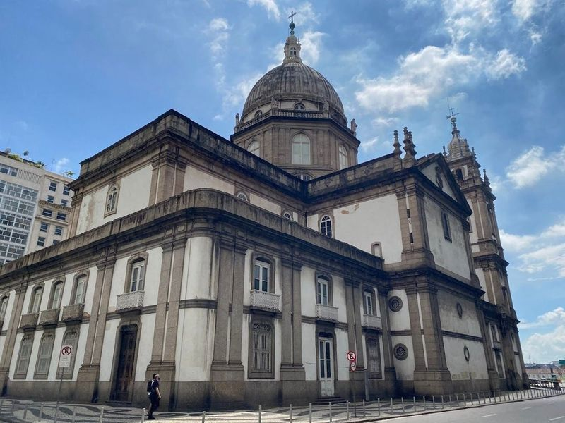
Igreja de Nossa Senhora da Candelária
Igreja de Nossa Senhora da Candelária is a grand church in Rio de Janeiro, known for its blend of baroque and Renaissance architectural styles. The construction of the church began in 1775 and it stands as one of the main religious monuments in the city. The interior boasts marble detailing and impressive bell towers. Situated in the city center, this 18th-century church is a must-visit for those interested in Brazil's historical architecture.
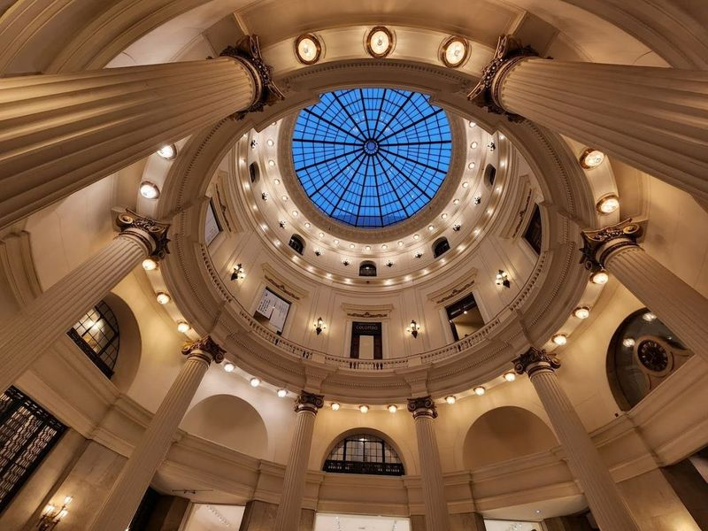
Centro Cultural Banco do Brasil (CCBB)
Located in a neoclassical building dating back to 1906, Centro Cultural Banco do Brasil (CCBB) is a renowned cultural center managed by the Bank of Brazil. The center offers a diverse range of attractions including art galleries, cinema, theater, and a library. Visitors can explore permanent exhibitions featuring a collection of coins and cells representing various periods of Brazilian history as well as temporary displays showcasing modern art from around the world.
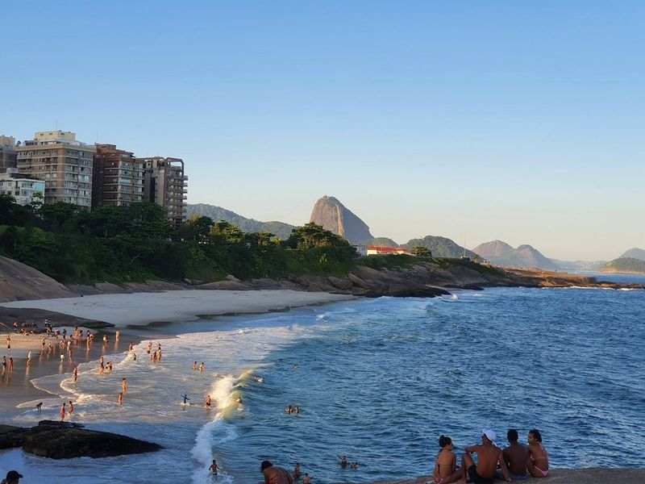
Pedra do Arpoador
Pedra do Arpoador is a rocky peninsula that separates Ipanema and Copacabana beaches in Rio de Janeiro. It's a popular spot for surfers and offers sunset views from its walking paths. The location provides unrestricted 360-degree views of the Atlantic Ocean, making it one of Rio's most romantic spots to watch the sunset. Visitors can enjoy the lively atmosphere with food stands offering local treats like tapioca, popcorn, and corn, as well as vegan options.
Copacabana Fort (Army History Museum and Copacabana Fort)
Located at the end of Copacabana's beach, Copacabana Fort is a military base open to the public. It offers views of the beach and ocean, as well as a chance to enjoy amenities like Confeitaria Colombo, a renowned cafe serving delicious meals. The fort also features exhibitions on Brazilian army history. Visitors can take in the expansive view of Copacabana beach while seated at outdoor cafes within the fort.
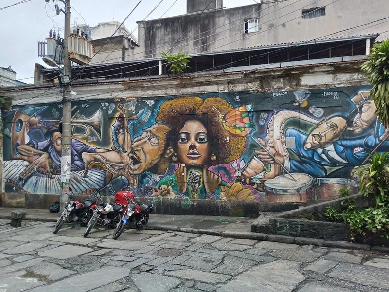
Pedra do Sal
Nestled in the historic port district of Saude, Pedra do Sal is a vibrant plaza that pulses with life and culture. Known as the birthplace of samba, this lively spot comes alive every Monday and Friday night when locals and visitors gather for spirited Roda do Samba sessions. The atmosphere is electric as musicians take center stage while enthusiastic crowds join in song, all while enjoying refreshing drinks from rustic stands.
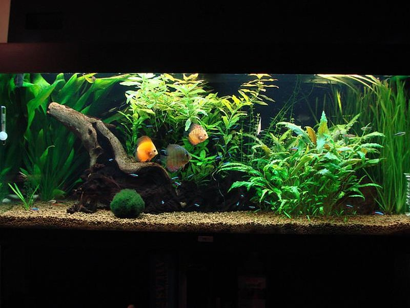
Largo de São Francisco da Prainha
Largo de São Francisco da Prainha is a charming street located in the city center of Rio de Janeiro. It is named after the historic monastic complex that faces it, including the 17th-century church of St. Francis. The church's interior reflects Portuguese influence with its cheerful and airy ambiance adorned with gold flourishes.
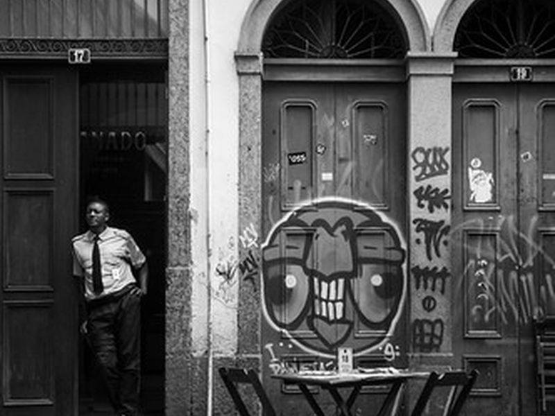
Cais do Valongo
Cais do Valongo is a significant historical site in Brazil, known for being the arrival point of enslaved Africans in the 19th century. Located in the port zone of Rio de Janeiro, it is part of a cluster of historical places that shaped Brazilian cultural identity. This area includes the Valongo Wharf, Pedra do Sal (the birthplace of samba), and the Valongo Garden.
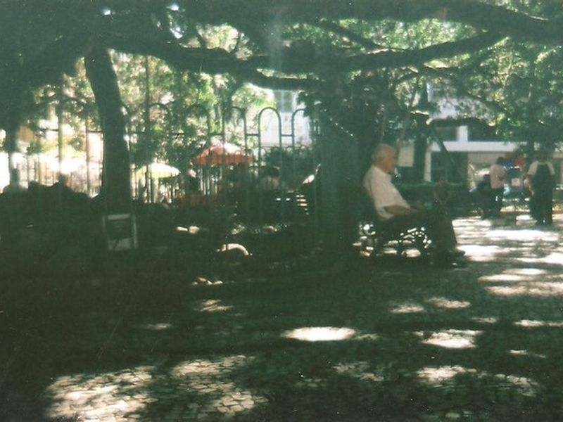
AquaRio
AquaRio, the largest marine aquarium in South America, is a must-visit destination for anyone exploring Rio de Janeiro. Nestled near the Museum of Tomorrow on Maua Pier, this interactive landmark features 28 enclosures that replicate various marine habitats, from vibrant coral reefs to tranquil kelp forests. With an impressive area of 26,000 square meters and housing around 8,000 animals across 350 species in a staggering 4.
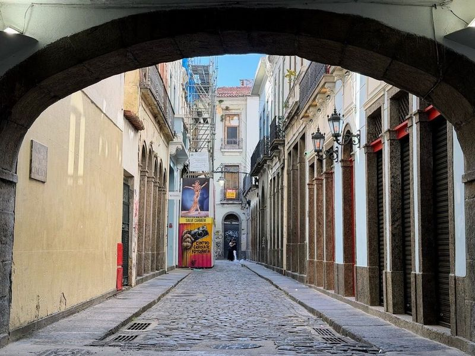
Arco do Teles
Arco do Teles is a charming 18th-century archway located in the city center of Rio de Janeiro. It leads to a picturesque cobbled street lined with affordable bars and restaurants, offering authentic Brazilian cuisine and lively nightlife, especially on Thursdays when a live samba band gets everyone dancing. The area also features historic sights like Paco Imperial and retains its old colonial charm with narrow shop fronts and cobblestone streets.
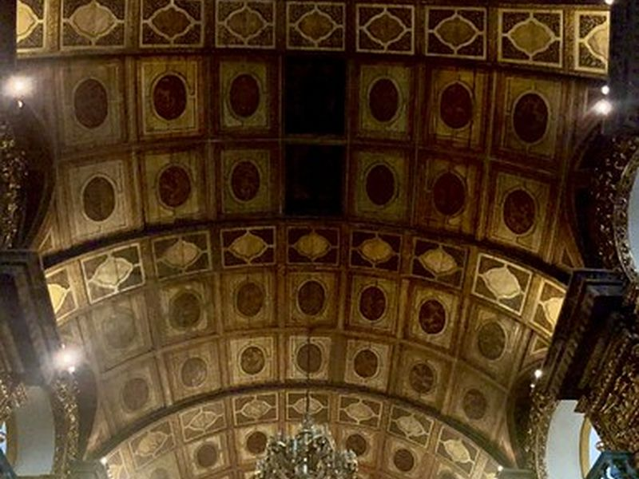
Praça XV de Novembro
Praça XV de Novembro, also known as Praça Quinze, is a captivating historic plaza nestled along Rio de Janeiro's colonial-era waterfront. This vibrant square showcases an intriguing blend of architectural styles, from the elegant Carmo Convent and its adjoining church—once the palace of King John VI—to the sleek modern skyscrapers of Candido Mendes University that rise in the background.
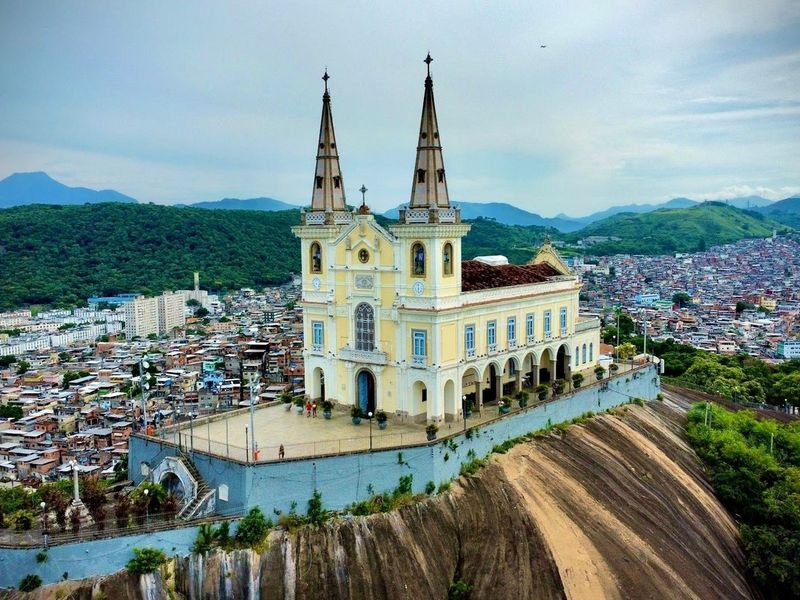
Basílica Santuário de Nossa Senhora da Penha de França
The Basílica Santuário de Nossa Senhora da Penha de França, built in 1728, is a significant landmark of religious tourism in Rio. It is perched on top of a rock and is known for its staircase with over 380 steps. The sanctuary offers views that attract both faithful pilgrims fulfilling vows and tourists seeking panoramas. Its architecture features an eclectic style with influences from the Neogothic style following its last renovation.
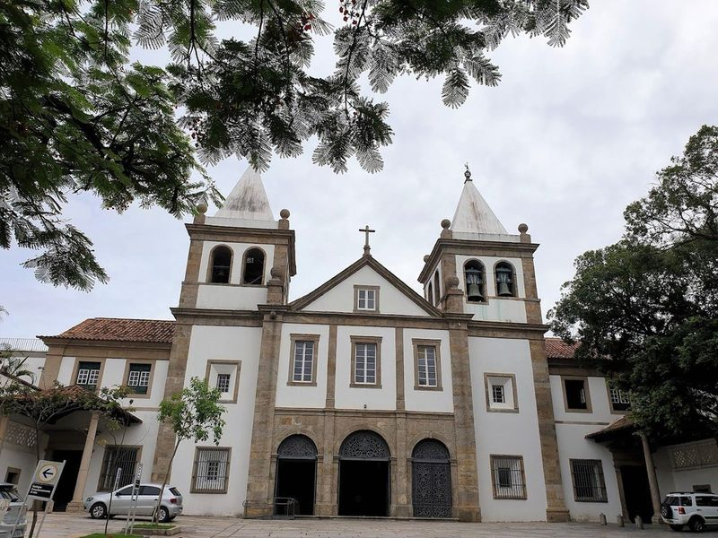
Mosteiro de São Bento
Mosteiro de São Bento, a 17th-century church adorned with intricate gilded carvings, is a significant site in Rio de Janeiro. Situated on a hill overlooking the Bay of Guanabara, it offers protection and pleasant weather. The monastery holds the remains of Brazilian military figures and has historical ties to Italy. Visitors can explore nearby attractions like the National Library and take a walking tour that includes landmarks such as Praca XV de Novembro and the Municipal Theatre.
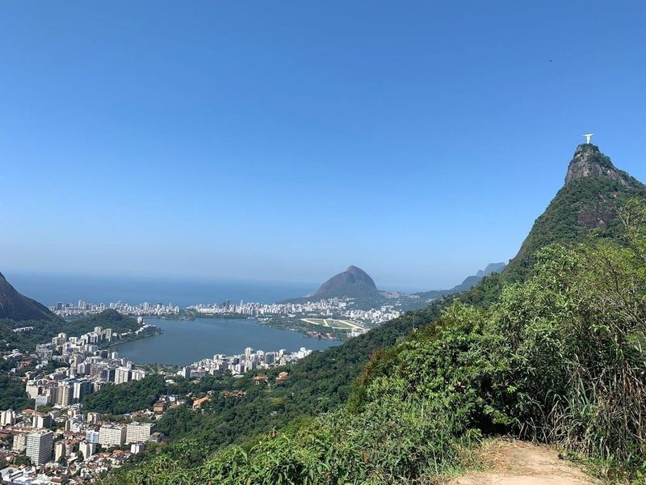
Tijuca National Park
Tijuca National Park, located in Rio de Janeiro, is a remarkable urban rainforest offering a variety of activities for nature enthusiasts. Spanning 9,600 acres within the Atlantic Forest, it boasts diverse terrains, waterfalls, caves and an abundance of wildlife. The park attracts over 3 million visitors annually who come to explore its numerous hiking trails and enjoy birdwatching while taking in vistas of Rio's landmarks.
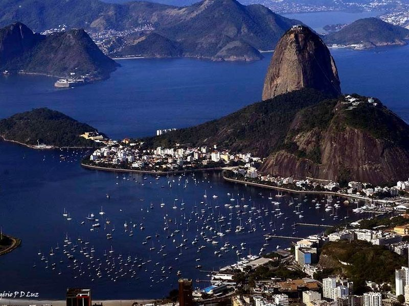
Sugarloaf Mountain
Sugarloaf Mountain, a 396m-tall peak on a peninsula with sweeping views and accessible by cableway, is rocks in the world. It offers views of Rio de Janeiro from its peak and is accessible by a thrilling glass-walled cable car journey. Additionally, visitors can enjoy an Instagram-worthy breakfast at Parque Gloria Maria with views of Guanabara Bay and Sugarloaf Mountain.
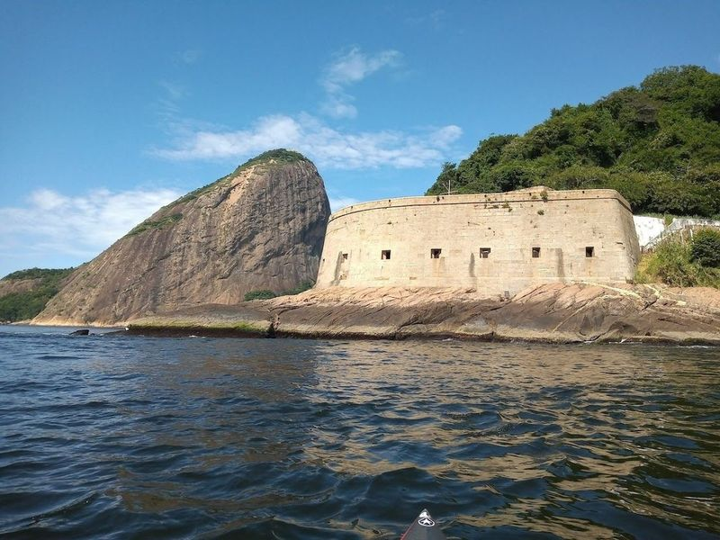
Fortaleza de São João
Fortaleza de São João is one of the three forts built to protect the city, along with Lajes Fort and Santa Cruz Fort. Situated near the neighborhood of Santa Teresa and Santos Dumont airport, it offers a historical glimpse into Rio de Janeiro's defensive structures. The fort stands as a testament to the city's rich history and strategic importance in protecting its shores.
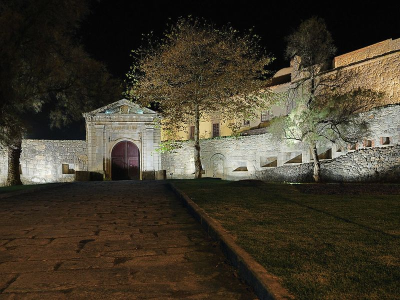
Duque de Caxias Fort
The Duque de Caxias Fort is a hilltop fort located in the Copacabana neighborhood area of Rio de Janeiro, Brazil. The fort was built by the Portuguese in 1565 and is important tourist destinations in Rio. The fort provides a Caxias memorial history exhibits, a film room, and scenic views.
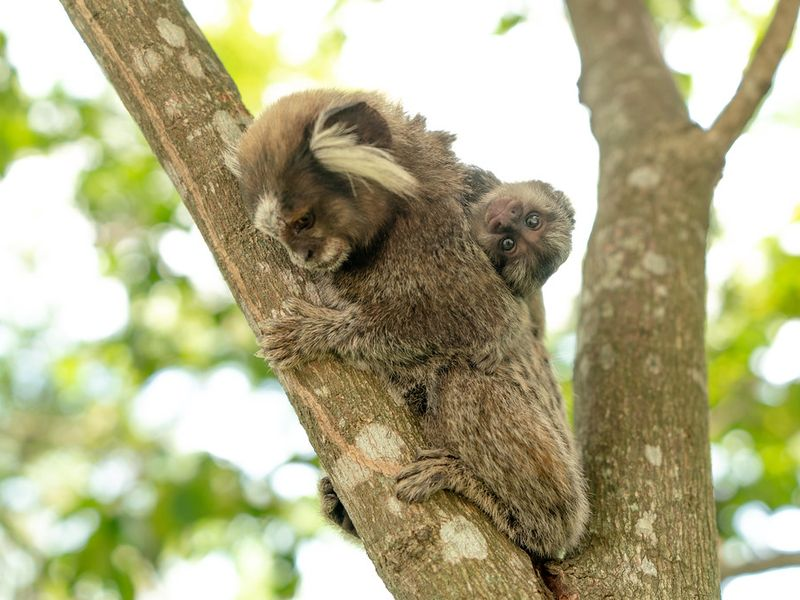
Fortaleza de Santa Cruz da Barra
Fortaleza de Santa Cruz da Barra is a historic fortress located in Niteroi, Brazil. It boasts architecture and is one of the oldest and most significant historical sites in the country. The fortress offers guided tours and provides visitors with views of Guanabara Bay and Sugarloaf Mountain. As a main defensive structure during the colonial and imperial periods, it holds great historical importance.
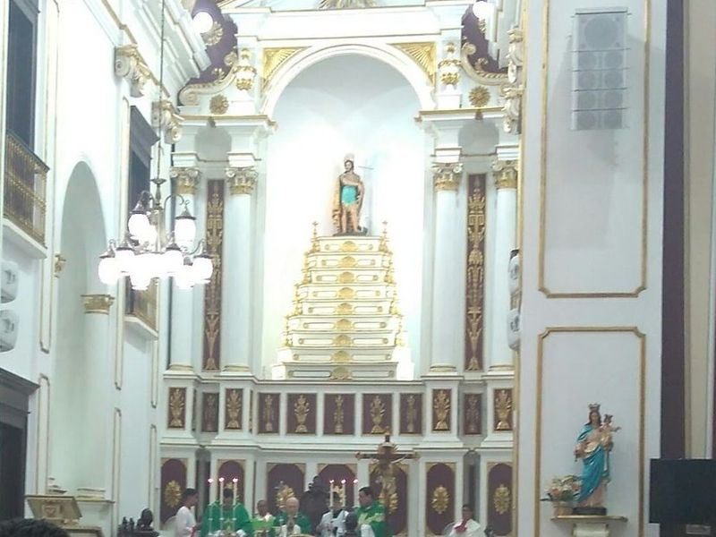
Metropolitan Cathedral St. John the Baptist
The Metropolitan Cathedral St. John the Baptist, also known as the Cathedral of St. Sebastian of Rio de Janeiro, is a architectural gem located in downtown Rio. Designed by Edgar Fonseca, this modernist marvel features a striking cone-shaped dome that reaches 246 feet high and draws inspiration from Mayan pyramids. Visitors are often captivated by its vibrant stained-glass windows that create an enchanting interplay of light within the cathedral's interior.
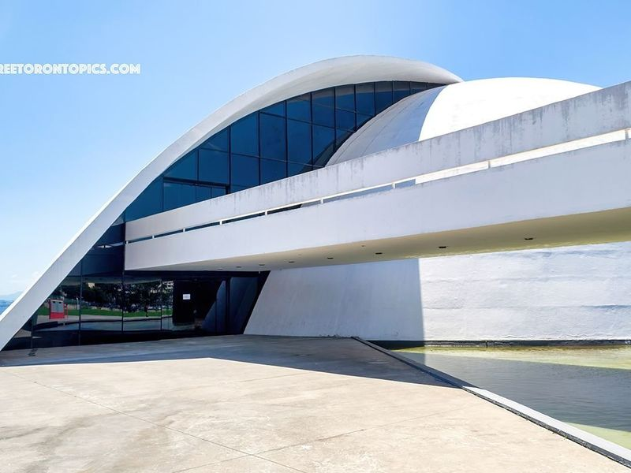
Teatro Popular Oscar Niemeyer
Teatro Popular Oscar Niemeyer is a significant cultural and tourist complex located in Niteroi, Brazil. Designed by the renowned architect Oscar Niemeyer, it is part of the larger Niemeyer Way architectural ensemble along Guanabara Bay. The theater offers a diverse program that encompasses various art forms such as music, photography, dance, painting, and theater.
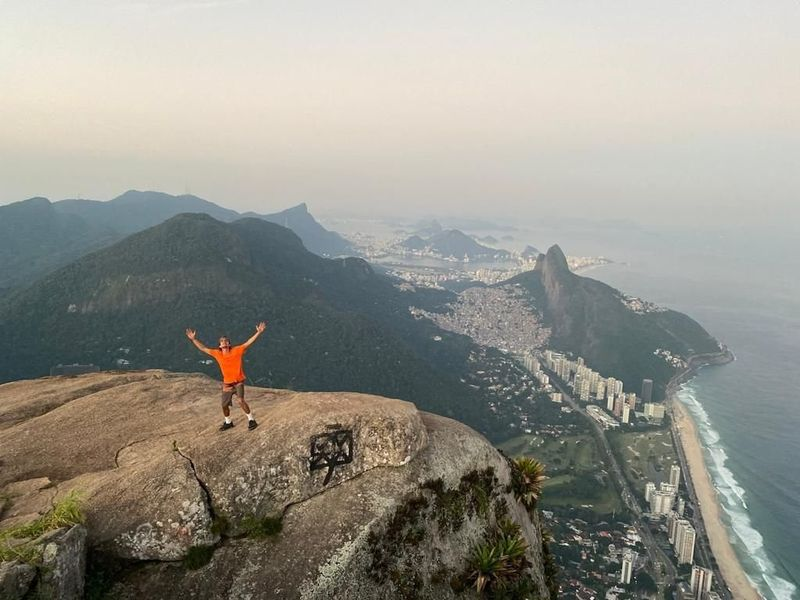
Trail to Pedra da Gávea
The Pedra da Gávea trail climbs through Tijuca National Park to the summit of a granite monolith rising 844 metres above Rio's western beaches. The steep path takes most hikers five to six hours round trip, with iron rungs and exposed sections near the top. From the plateau, views stretch across Barra da Tijuca, São Conrado, and the Atlantic coastline.
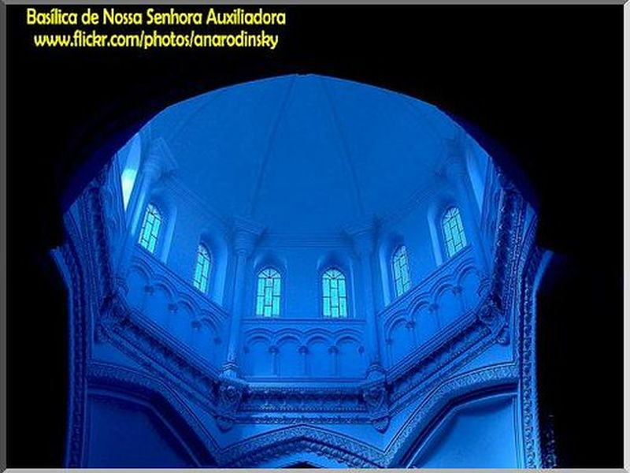
Pedra Bonita
Pedra Bonita, located in Tijuca National Park near the Atlantic Coast, offers a hiking trail and hang-gliding port with panoramic views. The 696-meter peak provides landscapes of Tijuca Forest National Park, Pedra da Gavea, Sao Conrado and Barra beaches. Visitors can explore the biodiverse wonderland with natural gems like Gruta do Inferno cave and Cascatinha Waterfall.
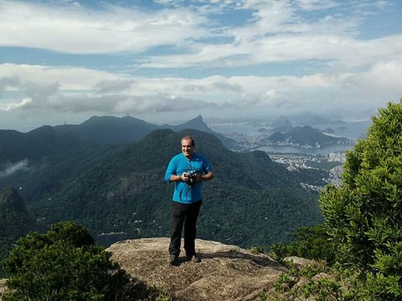
Parque Eduardo Guinle
Parque Eduardo Guinle is a serene and well-maintained wooded park in Rio de Janeiro's South Zone. It offers free entry and is dog-friendly, making it a popular spot for picnics and leisurely walks. The park features a duck pond, playgrounds, walking trails, and even has areas dedicated to dogs. Visitors can enjoy the peaceful atmosphere while observing various animals such as ducks, geese, birds, tropical fish, and toads.
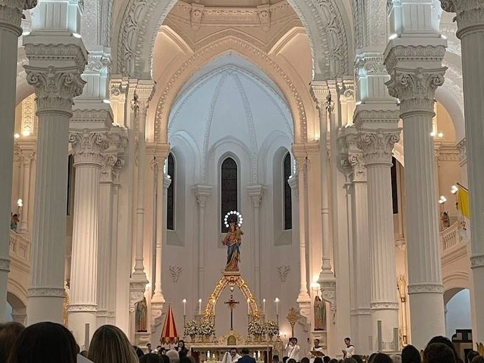
Basílica De Nossa Senhora Auxiliadora
Basílica Nossa Senhora Auxiliadora is a neo-Gothic Catholic church in Rio's Tijuca neighbourhood, completed in the early 20th century with tall stained-glass windows and a spacious nave. A tree-lined square and local shops surround the parish, which serves one of the city's older middle-class districts. The building is a landmark on tram and bus routes toward the northern zone.
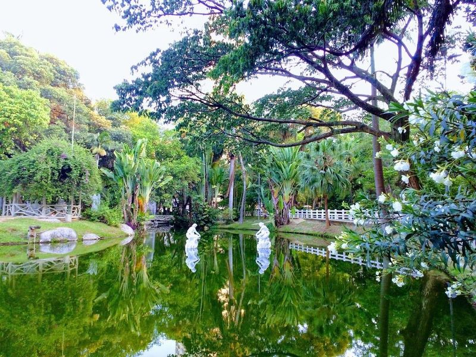
Campo de São Bento
Nestled in the vibrant heart of Icarai, Campo de São Bento is a delightful public park that offers an inviting escape from the urban bustle. Spanning over 20 acres, this green oasis features serene walking paths and picturesque ponds, making it ideal for leisurely strolls or peaceful picnics. Families will appreciate the well-equipped playgrounds and various activities available for children.